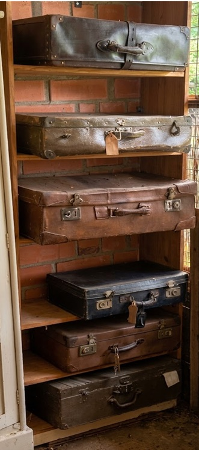

Музей: взгляд на прошлое из настоящего

Войти в это пространство — значит отправиться в путешествие во времени, к образу жизни, отмеченному самообеспечением и умением наилучшим образом использовать собственные ресурсы. Старая утварь, рабочие инструменты, фотографии, карты и памятные вещи приближают нас к эпохе, когда повседневная жизнь была тесно связана с землёй, трудом и знаниями, передававшимися из поколения в поколение.
Музей приглашает нас открыть этот этап нашей истории через предметы и фотографии, принадлежавшие семье из Орты, из Les Vaqueres. Это свидетельство, позволяющее узнать обычаи, работу и образ жизни мира, перешедшего от натурального хозяйства, основанного на производстве для собственных нужд, к экономике, всё более ориентированной на производство.
По пути мы находим и воспоминания о нашей личной и общей истории: школу, ремёсла, домашние дела и мелочи, из которых складывалась повседневность семей Орты-де-Льейда.
Музей показывает, что самообеспечение было делом не только полевых работ, но и домашних знаний, практических навыков и использования всего, что было под рукой: варить мыло дома, вязать мётлы и пользоваться тем, что давала окрестная земля, а также уметь шить одежду и чинить её — латать и перешивать, чтобы она дольше служила.
Мы хотели создать проект большой исторической и человеческой ценности. Через предметы, фотографии и воспоминания семьи Les Vaqueres мы вернули образ жизни, который сегодня кажется далёким, но помогает понять, откуда мы родом.
В этом музее вы не найдёте простой описи старой утвари: мы постарались рассказать историю людей, стоящих за ней, — их знания, потребности, усилия, а также их счастливые минуты.
Предметы хранят память о вещах; истории, которые мы рассказываем, оживляют их и помогают понять, кто мы и откуда.
Экспозиция следует трём сквозным темам:
- Повседневная жизнь: как семьи жили, работали и организовывались.
- Самообеспечение: наилучшее использование ресурсов, а также знания и умения, позволявшие жить, имея немного.
- Семья и общая память: люди, воспоминания и маленькие истории, помогающие понять эпоху.
Самообеспечение не означало, что семья производила абсолютно всё, — она старалась как можно меньше зависеть от внешних ресурсов.
Прошлое и настоящее в зеркале

У входа нас встречает большое зеркало с надписью, приглашающей остановиться и посмотреть.
Драгоценный взгляд на вчерашний день, встречающийся с сегодняшним, через память и фотографию в тонах сепии.
Зеркало — гораздо больше, чем украшение: это метафора диалога между прошлым и настоящим. Глядя в него, мы видим не только собственное отражение, но и узнаём себя частью истории, начавшейся до нас и в каком-то смысле живущей в нас.
Это приглашение оглянуться назад, чтобы понять, откуда мы, ценить унаследованное и открыть связи, соединяющие нас с предыдущими поколениями.
От Пиренеев до Орты-де-Льейда: история семьи

Этот иллюстрированный комикс рассказывает историю семьи Les Vaqueres — от её корней в горах до прибытия и обустройства на равнине Льейды.
Рисунки показывают пройденный путь, перемены в образе жизни и начало новой главы на другой земле. Это семейная история, которая в то же время является частью более широкой миграции: многих семей из Пиренеев, спустившихся на равнины в поисках новых возможностей и помогших сформировать и заселить Орту-де-Льейда.
Комикс приближает нас к жизни тех поколений, которые усилиями, тяжёлым трудом и умением приспосабливаться пустили корни на новой земле. Это свидетельство семейной памяти и в то же время частица истории заселения и преображения Орты-де-Льейда.
За каждой семьёй стоит дорога, место происхождения и история, которую стоит рассказать. Эти рисунки помогают нам её вернуть и сохранить живой память о поколениях, живших до нас.
Les Vaqueres: три поколения, одна история жизни

Эта рамка помогает понять способ организовывать жизнь, работать, относиться к земле и передавать знания.
Когда людей, живших определённым укладом, уже нет, их вещи, фотографии и воспоминания становятся свидетелями мира, который не вернётся, но который стоит сохранить.
Эта рамка особенная, потому что рассказывает почти вековую историю семьи через три разных момента. Это не просто собрание фотографий: это визуальный рассказ о преемственности семьи, о переменах между поколениями и о том, как менялся образ жизни. Три мгновения, в которых видно, как идёт время, сменяются поколения и меняется уклад.
1930-е: начало новой жизни
На первой фотографии — супруги и их дочери, члены семьи, спустившиеся с гор на равнину Льейды, чтобы начать здесь новую главу. Это первые герои истории, сотканной из тяжёлого труда, укоренения в земле и строительства нового дома.
1960-е: эстафету принимает новое поколение
Вторая фотография переносит нас во время перемен. Эстафету приняло новое поколение: Антония вышла замуж и уже стала матерью двоих детей. Семья растёт, жизнь продолжается.
Снимок хранит и память о семейной истории, отмеченной Гражданской войной и изгнанием. На нём виден автомобиль родственников, эмигрировавших во Францию и спустя годы сумевших снова въехать в Испанию. Деталь, говорящая о встречах, расстоянии и семейных узах, которые не смогли разорвать ни время, ни политика.
2010: Лола, живая память об укладе
Последняя серия фотографий знакомит нас с Лолой, последней из Les Vaqueres, умершей в 2010 году. В обществе, уже глубоко изменившемся, она всё ещё хранила и применяла часть знаний и обычаев натурального хозяйства. Она — ключевая фигура музея: мост между миром самообеспечения и современным обществом.
Она по-прежнему вязала мётлы из растения ботжа, собранного в Ла-Митжане, и варила мыло дома, сохраняя живыми традиционные умения, которые были частью повседневности предыдущих поколений.
С Лолой закрывается глава, но остаётся память об образе жизни, основанном на использовании того, что даёт земля, на ручном труде и на умениях, передававшихся из поколения в поколение.
Эти фотографии напоминают, что история живёт не только в великих событиях, но и в жизни людей, в их повседневных жестах и в маленьких знаниях, которые, если их не сохранить, могут исчезнуть вместе с ними.
Чемоданы: воспоминания об изгнании, возвращении и надежде

Эти чемоданы рассказывают тяжёлую историю, но говорят и о способности людей заново построить свою жизнь. Они символизируют вынужденные путешествия, неопределённость, разлучённые семьи и надежду найти место, чтобы начать сначала.
Это не чемоданы для отпуска. Они хранят истории жизни, разлуки и выживания. Они символизируют пути, которыми некоторым членам семьи, как и многим другим людям, пришлось пройти в трудные времена: изгнание во Францию, чтобы спастись от войны и репрессий, и возвращение в горы после того, как их выгнали из дома.
За каждым чемоданом — путешествие, которое не всегда выбирали, а к которому вынуждали обстоятельства. Уехать значило оставить дом, землю, воспоминания, а часто и часть семьи в надежде найти более безопасное место для жизни.
Сегодня эти чемоданы по-прежнему хранят часть той истории. В них лежат семейные документы и памятные вещи: купчие, продовольственные карточки, фотографии и другие свидетельства времени, отмеченного войной, лишениями и социальными переменами.
Они стали маленькими архивами памяти, помогающими восстановить пережитое семьёй и лучше понять, как те события сказались на повседневной жизни людей.
Ведь иногда чемодан содержит не то, что мы решаем взять с собой, а всё, что мы вынуждены оставить.
Учиться шить: одеть всю семью

В семейной экономике, основанной на самообеспечении, экономить деньги и сводить расходы к минимуму было необходимостью. Многие работы, которые сегодня мы поручаем специалистам или решаем покупкой нового, тогда выполнялись дома, своими силами и знаниями семьи.
Швейная машинка — главная героиня снимка, но за ней стоит история учёбы, инициативы и домашней экономии.
Это история Антонии, одной из сестёр Vaqueres и матери двоих детей, которая решила научиться шить. Она окончила курсы кройки и шитья (corte y confección) и получила свидетельство о том, что умеет шить одежду для всей семьи.
Рамка хранит память о той учёбе: свидетельство об окончании курсов и групповую фотографию всех девушек, которые в них участвовали. Рядом стоит швейная машинка — незаменимый инструмент, чтобы превращать ткань в одежду, перешивать её и продлевать ей жизнь.
Шить дома означало большую экономию для семейного бюджета, а также овладение полезным и ценным умением. Это был способ удовлетворять повседневные потребности благодаря изобретательности, усердию и собственному труду.
Так швейная машинка становится свидетелем образа жизни, в котором умение сделать всё самому было неотъемлемой частью самообеспечения.
Школа: одна родина, один язык, одна религия

Этот уголок воссоздаёт атмосферу сельской школы времён диктатуры Франко и переносит нас в эпоху, когда образование было глубоко отмечено идеологией режима.
Здесь мы видим типичные черты классов тех лет: деревянные парты, книги, школьные принадлежности и карту, висевшую на стене. Есть и вывеска школы Санта-Каталина, находившейся в округе, — напоминание о старых сельских школах, которые были частью жизни многих семей Орты. В районе Греньяна её дополняла официальная школа, размещавшаяся в ризнице церкви.
Образование при Франко опиралось на три главных принципа: одна родина — Испания; один язык — испанский; одна религия — католицизм. Так школа стала инструментом передачи патриотических, религиозных и общественных ценностей, навязанных режимом.
В Каталонии каталанский язык был исключён из официального обучения и школьной жизни, а испанский стал обязательным языком школы. Католическая религия, в свою очередь, занимала центральное место в образовании и воспитании детей.
Это пространство приглашает вспомнить, какой была школа в то время, чему там учили и в каком мире росли дети. Оно также позволяет задуматься о том, как школа, помимо обучения чтению и письму, может отражать общество и исторический момент, которым она принадлежит.
Карта, непременная принадлежность каждого класса, напоминает и о роли школы в передаче знаний и мировоззрения той эпохи.
Жизнь под открытым небом: работа в поле и наилучшее использование земли

Жизнь под открытым небом вращалась вокруг обработки земли и получения от неё всего необходимого для жизни. Каждая культура имела конкретное назначение и должна была кормить и людей, и животных хозяйства.
На полях выращивали люцерну и другие кормовые культуры для скота и пшеницу на муку и хлеб, которая давала и солому для многих нужд. Ещё выращивали свёклу для свиней, репу для коров и кукурузу для кур.
Огород использовали круглый год. Овощи выращивали для семьи, следуя ритму времён года. По краям полей росло несколько плодовых деревьев, урожай которых использовали в течение всего года.
Ничто не должно было пропасть. Когда наступала пора урожая, нужно было думать и о зиме. Продукты запасали, готовили консервы, варенья и другие домашние заготовки, чтобы фрукты и овощи были, когда свежих уже не оставалось.
Особенно привлекает внимание canyís — тростниковая полка, подвешенная к потолку. Сплетённая из тростника, она служила для хранения фруктов, особенно яблок, в зимние месяцы. Подвешенная высоко, она экономила место и держала продукты в правильных условиях, чтобы они не портились и до них не добрались крысы.
Это собрание орудий, утвари и традиционных предметов показывает образ жизни, в котором труд следовал ритму природы. Выращивать, собирать урожай, кормить животных и сохранять продукты — всё это было частью одного цикла, основанного на наилучшем использовании собственных ресурсов и планировании потребностей на весь год. Самообеспечение заключалось не просто в производстве еды, а в умении планировать и использовать ресурсы так, чтобы покрыть нужды целого года.
Это была экономика, в которой почти у всего было применение и в которой повседневные знания были необходимы, чтобы поддерживать дом и семью.
Молочное хозяйство

Это пространство рассказывает о ещё одном ключевом занятии семейной экономики: производстве и продаже молока. Оно показывает, как некоторые семьи, обосновавшись в Орте-де-Льейда, добавили к полевым работам животноводство и сделали молоко источником дохода. Фотография сохраняет и утварь, которой пользовались в этой работе, и помогает представить, как действовало то маленькое семейное дело.
Когда семьи из Пиренеев обосновывались в Орте-де-Льейда, многие добавляли к ежедневному труду разведение крупного рогатого скота. Производство молока стало способом пополнить семейный бюджет и заработать собственным трудом.
В Les Vaqueres молоко шло двумя путями: часть продавали прямо соседям из округи, которые приходили на ферму купить его на каждый день, а оставшееся везли на продажу в Льейду.
Молочное хозяйство было, таким образом, занятием, связывавшим жизнь дома с его ближайшим окружением. С одной стороны, оно снабжало соседние семьи свежим молоком, с другой — позволяло семье возить свой продукт в город.
Выставленная молочная утварь — маслобойки, мерки и бидоны — напоминает, как молоко собирали, хранили и развозили. Она была необходима для занятия, требовавшего постоянного ежедневного труда, привязанного к часам дойки и к необходимости доставить клиентам свежее молоко. Можно увидеть даже скамеечку для дойки.
Этот труд показывает, как семьи сочетали земледелие и животноводство, чтобы наилучшим образом использовать то, что у них было. Земля кормила животных, животные давали молоко, а его продажа помогала содержать дом.
Молочное хозяйство — пример того, как самообеспечение и заработок часто шли рука об руку: производить для собственных нужд семьи, но и продавать излишки, чтобы иметь деньги на другие домашние расходы.
Самообеспечение: использовать всё, что даёт земля

Эта часть музея передаёт идею самообеспечения, придающую ему смысл. На фотографии — широкий набор простых, но очень специализированных орудий, позволявших использовать то, что давала природная среда.
В те времена природа была словно кладовая, доступная семье, и нужно было уметь воспользоваться всем, что она предлагала. У каждого занятия были свои орудия, и каждый предмет отвечал конкретной потребности повседневной жизни.
Эти орудия рассказывают о том образе жизни и об умении находить пищу в разных частях ландшафта: на полях, в огороде, на деревьях, в реке и на межах.
Здесь, например, есть caragolera для хранения улиток; filat — сеть для ловли рыбы в реке; корзиночка для сбора куриных яиц; и ratera — ловушка для мелких птиц.
В ящике есть и разные рабочие инструменты: serpeta для сбора оливок, колышки для посева кукурузы, серп и другие орудия, у каждого из которых была своя задача в поле.
Большую часть собранной пищи съедала семья. Когда урожай или собирательство давали больше, чем нужно, излишки можно было продать на рынке. Так то, что давала земля, не только помогало прокормить дом, но и могло принести небольшой доход.
Мы понимаем, что воображение, наблюдательность и знание окружающей среды были так же важны, как и сами орудия. Использовать всё было необходимостью, но и способом понимать жизнь.
El mandongo: свинья — кладовая на весь год

В самодостаточной семейной экономике свинья играла жизненно важную роль. Вместе с домашней птицей, дававшей яйца и мясо, она была одним из главных источников белка в рационе.
Свинью весь год кормили остатками из дома и огорода, пока не наступало время забоя, традиционно в самые холодные месяцы, часто в январе. Низкие температуры облегчали разделку и хранение мяса.
Mandongo было гораздо больше, чем просто забой свиньи: это целый ряд работ, требовавших организации, опыта и знаний, передававшихся из поколения в поколение. Каждую часть животного нужно было использовать и превратить в еду, которая хранилась бы месяцами.
Для этого применяли разные способы консервирования: куски мяса вялили; делали колбасы и подвешивали их созревать; часть варили; а ещё готовили tupina — способ хранить мясо в жиру.
Утварь этого пространства приближает нас к тому тяжёлому совместному труду, который превращал забой в праздник, означавший запасы на значительную часть года.
Свинья была, по сути, настоящей семейной кладовой. Благодаря планированию, тяжёлому труду и знанию консервирования один забой давал разные мясные продукты на многие месяцы, пока цикл не повторялся на следующий год. Mandongo — прекрасный пример этой культуры предусмотрительности: речь шла не только о том, чтобы добыть еду, но и о том, чтобы уметь переработать и сохранить её надолго.
Ничто не могло пропасть: каждая часть животного имела применение, и каждый продукт помогал обеспечить семью едой.
Досуг: карты, радио и разговоры

Повседневная жизнь состояла не только из работы и обязанностей. Были и минуты, чтобы отдохнуть, немного развлечься и побыть вместе всей семьёй.
Некоторыми вечерами, когда дневная работа была закончена, или по воскресеньям, когда в гости приезжала Кармета — сестра, жившая в Льейде, — и все собирались вместе, этот уголок становился маленьким местом встреч. Это были минуты, которых ждали все.
Карты были одним из самых распространённых развлечений. Партия была поводом скоротать время, поболтать и вместе посмеяться. Тем временем радио, всегда включённое, составляло им компанию музыкой, новостями и передачами, которые были частью повседневности, — например, радиосериалом или программой Señora Francis.
Было и время рассказывать истории, делиться воспоминаниями, разглядывать фотографии и обмениваться новостями. Чтобы хорошо провести время, многого не требовалось: хватало колоды карт, радио и общества семьи.
Этот уголок напоминает о ещё одной стороне самообеспечения: простой жизни, в которой досуг строился вокруг дома и семейных связей. В музее он показывает самую человечную сторону семейной жизни: семьи тоже находили способы радоваться жизни.
Ведь помимо работы и повседневных нужд именно эти маленькие общие минуты складываются в воспоминания семьи.
Этот уголок говорит о богатстве, которое измерялось не деньгами, а временем, проведённым вместе.
Весы: к новой сельскохозяйственной экономике

Это последнее пространство особенно важно, потому что завершает посещение музея ключевой мыслью: преображением семейной экономики, которая шаг за шагом перешла от самообеспечения и натурального хозяйства к земледелию для производства и продажи.
Постепенно старые зерновые культуры уступили место плодовым деревьям, прежде всего грушам и яблоням. Продукция хозяйства уже предназначалась не только для дома: продажа на рынке становилась всё важнее.
Три предмета помогают понять эту перемену.
Фотография: новые культуры, новый труд
На одной из фотографий мы видим Антонию и её мужа Жузепа, которые готовят известково-серный отвар (полисульфид кальция), чтобы обработать плодовые деревья и защитить их от болезней и вредителей. Это картина приспособления к новому типу земледелия, требовавшему новых знаний, техник и ухода.
Весы: взвешивать, чтобы продавать
Весы стали незаменимым инструментом, когда садоводство вышло на первый план. На них взвешивали каждый ящик груш и яблок, собранных в хозяйстве, — необходимый шаг, чтобы подготовить урожай и продать его.
Калибр: фрукты для рынка
Другой предмет — калибр, которым проверяли размер груш и сортировали их по размерам, требуемым для продажи. Фрукты ценились уже не только для семейного стола: они должны были также соответствовать стандартам качества и товарной сортировки.
Эти три предмета рассказывают о переходе к более специализированному земледелию, ориентированному на рынок. Земля по-прежнему оставалась главным источником средств к существованию, но потребности и способы труда изменились.
Так весы отмечают конец одного цикла и начало нового: от экономики, производившей главным образом, чтобы жить, к экономике, которая должна была производить и на продажу.
Виртуальный музей традиционной сельскохозяйственной техники

Виртуальный музей традиционной сельскохозяйственной техники (MVTAT) создан в рамках Службы истории, документации и наследия кафедры истории Университета Льейды.
Музей стремится показать широкий спектр орудий и технологий, формировавших историю сельской жизни вплоть до широкого распространения ископаемого топлива в земледелии и в продаже его продукции. Он также представляет первые тракторы и машины, чтобы их можно было сравнить с орудиями традиционного земледелия, где главными источниками силы были тягловые животные и человеческий труд, а также несколько технологий, работавших от ветра или воды.
Мы участвуем в нём, представляя наш собственный музей «Eines de les Vaqueres», где преображение земледелия и постепенный переход к рыночной экономике показаны через историю семьи из Орты-де-Льейда, рассказывающую об образе жизни всей той эпохи.